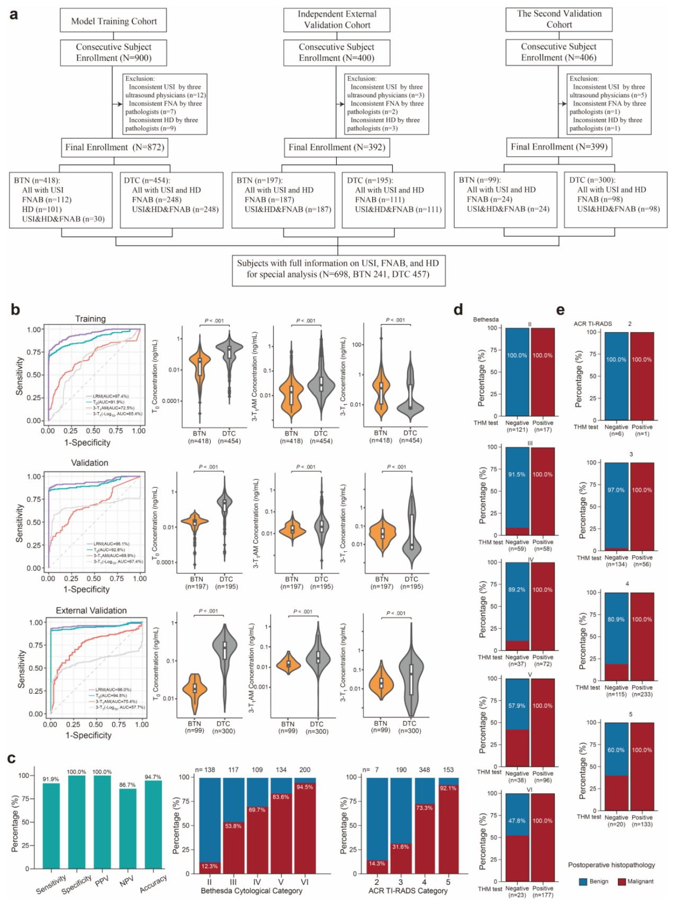

Қалқанша без обырын анықтаудың жаңа әдісі: қан анализі


Қалқанша бездегі түйіндерді анықтау кезінде дәрігерлерге олардың қатерлі ісік екенін түсіну қиынға соғады. Зерттеушілер қан сарысуындағы гормон метаболиттерін талдау арқылы жаңа диагностикалық әдіс ұсынды. Бұл тест қатерлі және қатерсіз түйіндерді ажыратуда жоғары дәлдік көрсетті. Бұл әдіс клиникалық тәжірибеде маңызды рөл атқаруы мүмкін.
Басты ойлар
- Гормон метаболиттеріне арналған тест обырды 94,9% дәлдікпен анықтайды.
- Bethesda III-IV санаттарындағы анық емес түйіндер үшін өте тиімді.
- Оң нәтиженің 99,8% дәлдігі обырды растауға сенімді негіз береді.
Толығырақ
Дифференциалданған қалқанша без обыры (ДҚБО) осы органның барлық қатерлі ісіктерінің 95%-дан астамын құрайды. Қазіргі таңда ACR TI-RADS жүйесі бойынша ультрадыбыстық зерттеу және Bethesda жүйесі бойынша биопсия негізгі әдістер болып табылады. Алайда, III-IV санаттағы анық емес цитологиялық нәтижелер диагностикада қиындық тудырады.
Зерттеушілер ДҚБО ісіктерінде DIO3 және ODC ферменттерінің белсенділігі жоғарылайтынын анықтады, бұл гормон метаболиттерінің (T0, 3-T1AM, 3-T1) деңгейін өзгертеді. Сұйықтық хроматографиясы-тандемдік масс-спектрометрия (СХ-ТМС) көмегімен 1663 пациент тексерілді. Машиналық оқыту моделі 94,9% дәлдікпен қатерлі ісікті анықтап, оң нәтиженің болжамдық құндылығы (PPV) 99,8%-ды құрады.
Шектеулер
Зерттеу когорталық сипатта болғандықтан, тәуелсіз клиникалық тексерулер мен басқа да қалқанша без ауруларының әсерін бағалау қажет.
Мақаланың толық аудармасы
Түйіндеме
Бұл когорталық зерттеу 2020-2025 жылдар аралығында бес үшінші деңгейлі медициналық орталықта жинақталған қалқанша без түйіндері бар 1663 субъектіні (1196 әйел, 467 ер адам; медианалық жасы 48, IQR 37-57) қамтыды. Цитологиялық/гистопатологиялық диагноздар тәуелсіз сараптама комитетімен белгіленді және операцияға дейінгі сарысудағы қалқанша без гормонының метаболиттері (THM) сұйықтық хроматографиясы-тандемдік масс-спектрометрия көмегімен тексерілді.
Түсіндірме
Сұйықтық хроматографиясы-тандемдік масс-спектрометрия — гормондар сияқты күрделі заттарды жоғары дәлдікпен бөлуге және анықтауға мүмкіндік беретін аналитикалық әдіс.
Дифференциалданған қалқанша без обырын (DTC) және қатерсіз қалқанша без түйінін (BTN) ажырату үшін сарысудағы THM тестіне негізделген диагностикалық модель 872 ретроспективті субъект (454 DTC және 418 BTN) деректері бойынша оқытылды, одан кейін субъектілерде (195 DTC және 197 BTN) проспективті модельді валидациялау және 399 субъектіде (300 DTC және 99 BTN) екінші валидация жүргізілді.
Диагностикалық модельді сәтті оқытқаннан кейін, модельді валидациялау DTC үшін 99,5% (196/197) диагностикалық спецификалықты, 92,3% (180/195) сезімталдықты, 99,4% оң болжамды мәнді (PPV), 92,9% теріс болжамды мәнді (NPV) және 95,9% (95% CI, 90,8-ден 100,0%-ға дейін) диагностикалық дәлдікті көрсетті. Екі валидациялық когортаны біріктіру DTC үшін 99,7% (295/296) диагностикалық спецификалықты, 92,1% (456/495) сезімталдықты, 99,8% PPV, 88,3% NPV және 94,9% (95% CI, 91,5-тен 98,0%-ға дейін) диагностикалық дәлдікті көрсетті.
Маңызды
Модель DTC-ні анықтауда, әсіресе Bethesda III-IV анықталмаған санаттарында жоғары диагностикалық дәлдік (96,0%-ға дейін) пен спецификалықты (100%-ға дейін) көрсетті.
Bethesda III-IV анықталмаған санаттары бойынша тест (139 DTC, 87 BTN) DTC үшін 100,0% (87/87) диагностикалық спецификалықты, 93,5% (130/139) сезімталдықты, 100,0% PPV, 90,6% NPV және 96,0% (95% CI, 89,2-ден 100,0%-ға дейін) диагностикалық дәлдікті көрсетті. Бұл зерттеу қалқанша без түйіндерін операцияға дейінгі диагностикалық бағалау үшін сарысудағы THM-ге негізделген жаңа молекулалық қан анализін әзірлейді, ол DTC үшін жоғары PPV және лайықты NPV, сондай-ақ тамаша жалпы диагностикалық дәлдікті көрсетеді.
ChiCTR2300070912. Құрметті редактор, қалқанша безінің обыры — жиі кездесетін эндокриндік қатерлі ісік. Ең көп таралған гистопатологиялық түрі — қалқанша безінің папиллярлы обыры (PTC), одан кейін фолликулярлы обыры (FTC) және онкоцитарлы обыры (OCC) тұрады. Бұл қатерлі ісіктер жиынтығында дифференцияланған қалқанша безінің обыры (DTC) деп жіктеледі және қалқанша безінің барлық қатерлі ісіктерінің >95% құрайды. DTC диагнозы әдетте жалпы халықтың ~60%–70% кездесетін қалқанша безінің түйіндерін бағалаудан басталады; бұл түйіндердің 5%–10% DTC болып табылады, ал қалғандары қалқанша безінің қатерсіз түйіндері (BTN) болып табылады. Қалқанша безінің түйіндерін диагностикалық бағалаудың негізгі мақсаты — қатерлі түйіндерді қатерсіздерінен ажырату. Қалқанша безінің түйіндеріне арналған қазіргі диагностикалық негізгі әдістер — ультрадыбыстық зерттеу және жіңішке инелі аспирациялық биопсия (FNAB). Ультрадыбыстық зерттеу үшін ACR TI-RADS (American College of Radiology Thyroid Imaging Reporting and Data System) қатер деңгейін бағалау үшін кеңінен қолданылады. Ол 1-ден 5-ке дейінгі бес өсіп келе жатқан санатты қамтиды, мұнда 1–2 санаттары қатерсіз/күдікті емес түйіндерді, ал 5-санат қатерлі болуы мүмкін жоғары күдікті түйіндерді білдіреді. FNAB үшін Bethesda жүйесі (TBSRTC) кеңінен қолданылады; ол алты диагностикалық санатты қамтиды, олардың әрқайсысы болжамды қатер деңгейімен байланысты, мұнда I санат диагностикалық емес, II — қатерсіз, III — анықталмаған маңызы бар атипия, IV — фолликулярлы неоплазия, V — қатерлі болуы мүмкін күдікті және VI — қатерлі болып табылады. Алайда, бұл диагностикалық әдістердің дәлдігі шектеулі, әсіресе Bethesda III–IV санаттары үшін, олар 25%–30% жағдайда кездесетін цитологиялық тұрғыдан анықталмаған қалқанша безінің түйіндерін қамтиды және қазіргі қалқанша безінің түйіндерін басқаруда үлкен диагностикалық қиындық тудырады.
Маңызды
Дифференцияланған қалқанша безінің обыры (DTC) барлық жағдайлардың >95% құрағанымен, Bethesda III–IV санатындағы түйіндерді диагностикалау қолданыстағы әдістердің төмен дәлдігіне байланысты күрделі мәселе болып қалуда. [!tip] FNAB — бұл цитологиялық талдау үшін жіңішке ине көмегімен тіндердің үлгісін алу процедурасы; Bethesda жүйесі осы нәтижелерді түсіндіруді стандарттайды.
Қалқанша безінің ауруларын диагностикалау үшін әртүрлі молекулалық тесттер зерттелген, олардың ішінде ең жиі қолданылатындары FNAB үлгілерінде орындалатын РНҚ немесе ДНҚ негізіндегі тесттер болып табылады. Бұл тесттер қалқанша безінің түйіндерін диагностикалау дәлдігін жақсартты, әсіресе олардың жоғары сезімталдығы мен қатерлі ісіктерге қатысты теріс болжамдық мәндері (NPV) арқасында «жоққа шығарушы» (rule-out) тесттер ретінде. Алайда, олардың ортақ шектеулері бар, ең көзге түсетіндері — төмен спецификалық және оң болжамдық мәндер (PPV), сондықтан олардың қатерлі ісіктерді «растаушы» (rule-in) қабілеті төмен. Сонымен қатар, олардың барлығы үлгілерді алу үшін инвазивті FNAB процедурасын талап етеді. Идеал жағдайда, инвазивті емес молекулалық тест жоғары спецификалық және лайықты сезімталдыққа ие болуы керек, осылайша жалпы диагностикалық дәлдікті қамтамасыз етеді.
Қан сарысуындағы қалқанша безі гормонының метаболиттерін анықтау бұл қажеттілікті қанағаттандыруы мүмкін. Қалқанша безінің гормондары, соның ішінде тироксин (T4), 3,5,5′-трийодтиронин (T3) және 3,3′,5′-трийодтиронин (rT3) қалқанша безі функциясының классикалық сарысулық биомаркерлері болып табылады, бірақ қалқанша безінің обыры үшін диагностикалық құндылығы жоқ. Қалқанша безі гормондарының жақсы сипатталған бірнеше метаболиттері (THM), әсіресе сарысуда анықталатындары, мыналарды қамтиды: 3,5-дийод-L-тиронин (3,5-T2); 3′,5′-дийод-L-тиронин (3′,5′-T2); 3,3′-дийод-L-тиронин (3,3′-T2); 3′-йод-L-тиронин (3′-T1); 3-йод-L-тиронин (3-T1); L-тиронин (T0) және 3-йодтиронамин (3-T1AM), олар қалқанша безі гормондарының метаболикалық жолдары арқылы түзіледі. Бұл THM-дер әртүрлі ферменттер, соның ішінде дейодиназа 3 (DIO3) және орнитиндекарбоксилаза (ODC) сияқты селеноферменттер катализдейтін реакциялар арқылы өндіріледі (SN-сурет 1). Қызығы, қалқанша безі гормондарын метаболиздейтін ферменттердің, мысалы, DIO3 экспрессиясы қалыпты тіндермен салыстырғанда онкогендік сигнал жолдары арқылы ынталандырылатын DTC ісіктерінде айтарлықтай жоғарылаған.
Түсіндірме
THM — бұл қалқанша безі гормондарының ыдырау өнімдері, олардың қандағы деңгейі ісік процесінің инвазивті емес белгісі болуы мүмкін.
Қалқанша безі гормондары сияқты, THM-дер де қанға шығарылады, дегенмен төмен концентрацияда, әдетте пг/мл диапазонында болса да. DTC ісіктерінде мол экспрессияланатын қалқанша безі гормондарын метаболиздейтін ферменттер — әсіресе дейодиназалар — қалқанша безі гормонының субстраттарымен байытылған жергілікті қалқанша безі ортасында болады. Бұл THM өндірісін белсенді және қарқынды ынталандыратын бірегей жағдайды жасайды, мүмкін тіпті салыстырмалы түрде кішкентай DTC ісіктерінде де. Демек, DTC ісігінің болуы осы белсенді өндіріс көзінен қанға үлкен мөлшерде THM-дердің тұрақты түрде шығарылуына әкелуі мүмкін, бұл әйтпесе төмен болып қалатын сарысудағы THM концентрациясын айтарлықтай өзгертеді. Бұл қанға негізделген THM анықтауды DTC-ді BTN-нен ажырату үшін сезімтал диагностикалық тестке айналдыруы мүмкін. Біз бұл гипотезаны осы екіжақты соқыр клиникалық зерттеуде сұйықтық хроматографиясы-тандемдік масс-спектрометрия (LC-MS/MS) көмегімен сынап көрдік, бұл сарысудағы THM-дерді өлшеу үшін кеңінен қолданылатын сезімтал және тұрақты әдіс (SN-сурет 13), мақсаты қалқанша безінің түйіндерін операция алдындағы диагностикалық бағалау үшін жаңа молекулалық қан тестін жасау болды.
Үш диагностикалық ақпараттық сарысулық THM-дерді — T0, 3-T1AM және 3-T1-ді қамтитын логистикалық регрессиялық модель (LRM) құрылды және 872 үлгіні қамтитын ретроспективті деректер жиынтығы көмегімен оқытылды, 392 үлгіні қамтитын проспективті деректер жиынтығы көмегімен расталды және DTC диагностикасы үшін 399 үлгіні қамтитын екінші проспективті деректер жиынтығы көмегімен қосымша расталды (1a, b-сурет; SN-сурет 2). Науқастардың бастапқы сипаттамалары, сынау әдістері және басқа ақпарат SN-кестелер 1–14 және 19-да келтірілген. Модельді оқыту DTC үшін 87,1% (364/418) диагностикалық спецификалықты, 93,0% (422/454) сезімталдықты, 88,7% PPV, 91,9% NPV және 90,1% (95% CI, 87,0%–92,9%) диагностикалық дәлдікті берді. Модельді растау DTC үшін 99,5% (196/197) диагностикалық спецификалықты, 92,3% (180/195) сезімталдықты, 99,4% PPV, 92,9% NPV және 95,9% (95% CI, 90,8%–100%) диагностикалық дәлдікті көрсетті. Екінші растау DTC үшін 100% (99/99) диагностикалық спецификалықты, 92,0% (276/300) сезімталдықты, 100% PPV, 80,5% NPV және 94,0% (95% CI, 89,5%–97,6%) диагностикалық дәлдікті көрсетті.
Екі растау когортасын біріктіру DTC үшін 99,7% (295/296) диагностикалық спецификалықты, 92,1% (456/495) сезімталдықты, 99,8% PPV, 88,3% NPV және 94,9% (95% CI, 91,5%–98,0%) диагностикалық дәлдікті берді (SN-кесте 15).
Маңызды
Үш метаболит (T0, 3-T1AM, 3-T1) негізінде жасалған модель тәуелсіз когорталарда тексерілгенде жоғары диагностикалық дәлдікті (94,9%) көрсетті, бұл әдістің DTC-ді инвазивті емес жолмен диагностикалау үшін әлеуетін растайды.
Біз ультрадыбыстық, цитологиялық және гистопатологиялық диагностикалық деректері толық 698 субъектіге ішкі топтық талдау жасадық (1-сурет c, d). Күтілгендей, гистопатологиялық тұрғыдан расталған қатерлі ісік деңгейі Bethesda II-ден VI-ға дейін дәйекті түрде өсті. Bethesda II түйіндері арасында THM тесті теріс болған барлық жағдайлар (121/121; 100%) гистопатологиялық тұрғыдан қатерсіз (benign) болып шықты. Bethesda III және IV түйіндері үшін THM тесті теріс болған жағдайлардың сәйкесінше 91,5% (54/59) және 89,2% (33/37) гистопатологиялық тұрғыдан қатерсіз болды. Bethesda V және VI түйіндері арасында сәйкесінше 22 және 11 жағдай гистопатологиялық тұрғыдан қатерсіз деп расталды және олардың барлығы THM тестінде теріс нәтиже берді.
Маңызды
THM тесті жоғары ерекшелікті (100%) және оң нәтиженің болжамдық мәнін (PPV 100%) көрсетіп, барлық Bethesda санаттарында қатерлі ісікті тиімді растады.
Қосымша ақпарат, SN-кесте (S16-кесте) THM тестінің жекелеген Bethesda санаттарындағы диагностикалық тиімділігін қорытындылайды. Барлық (100%) THM тесті оң болған жағдайлар барлық Bethesda санаттарында гистопатологиялық тұрғыдан қатерлі (malignant) болды. Жалпы алғанда, THM тесті 100% (98,4%–100%) диагностикалық ерекшелікті, 91,9% (89,0%–94,1%) сезімталдықты, 100% (99,1%–100%) PPV, 86,7% (82,2%–90,2%) NPV және 94,7% (91,1%–97,8%) диагностикалық дәлдікті көрсетті. Bethesda III және IV анықталмаған санаттарындағы 226 жағдай үшін THM тесті 100% (95,8%–100%) диагностикалық ерекшелікті, 93,5% (88,2%–96,6%) сезімталдықты, 100% (97,1%–100%) PPV, 90,6% (83,1%–95,0%) NPV және 96,0% (89,2%–100%) диагностикалық дәлдікті көрсетті.
Ультрадыбыстық, цитологиялық және гистопатологиялық диагноздары толық осы 698 субъектіде, күтілгендей, ACR TI-RADS 2–5 санаттарынан бастап гистопатологиялық тұрғыдан расталған қатерлі ісік деңгейінің өсуі байқалды (1-сурет e).
ACR TI-RADS 2 санатындағы қалқанша без түйіндері үшін THM тесті теріс болған барлық жағдайлар (6/6; 100%) гистопатологиялық тұрғыдан қатерсіз болды. ACR TI-RADS 3 және 4 санаттары үшін THM тесті теріс болған жағдайлардың сәйкесінше 97,0% (130/134) және 80,9% (93/115) гистопатологиялық тұрғыдан қатерсіз болды. ACR TI-RADS 5 санатындағы қалқанша без түйіндері үшін 12 жағдай гистопатологиялық тұрғыдан қатерсіз болып, олардың барлығы THM тестінде теріс нәтиже берді. THM тесті оң болған жағдайлар арасында 100% барлық ACR TI-RADS санаттары бойынша гистопатологиялық тұрғыдан қатерлі болды (SN-кесте).
Түсіндірме
PPV (оң нәтиженің болжамдық мәні) — тест оң болғанда аурудың шынымен бар болу ықтималдығы; NPV (теріс нәтиженің болжамдық мәні) — тест теріс болғанда аурудың жоқтық ықтималдығы.
DTC және HT аурулары бар 189 субъект тексерілді; THM тесті HT-ның тест нәтижелеріне әсері жоқтығын көрсетті (SN-сурет a). 340 HV субъектісінде THM тестін өткізу HV және DTC субъектілері арасында айқын айырмашылықты көрсетті (SN-сурет b). Тіндердің микромассивті иммуногистохимиялық бояуы DTC-де DIO3 және ODC ақуыздары экспрессиясының көршілес қалыпты тіндерге қарағанда айтарлықтай артқанын көрсетті (DIO3 үшін P < 0,001 және ODC үшін P < 0,01).
DIO3 және ODC екеуі де BTN-ге қарағанда DTC-де айтарлықтай артты (P = 0,005 және < 0,001, сондай-ақ ODC үшін P = 0,01) (SN-сурет). T0 және 3-T1AM концентрациялары DTC және көршілес қалыпты тіндерде BTN және көршілес қалыпты тіндерге қарағанда айтарлықтай жоғары болды, ал 3-T1 күтілгендей, DTC және көршілес қалыпты тіндерде BTN және көршілес тіндерге қарағанда сәйкесінше төмен болды (SN-сурет және SN-кесте). T0 концентрациясы DTC ісік көлемімен айтарлықтай оң корреляцияда болды (SN-сурет) және 3-T1AM-мен оң, 3-T1-мен күтілгендей теріс корреляцияда болды (SN-сурет).
Үш THM лимфа түйіндеріне метастазы бар және жоқ DTC науқастары арасында айтарлықтай ерекшеленбеді (SN-сурет). Сыналған DTC, BTN және HV топтары арасында несептегі йод мөлшері (UIC) бойынша айтарлықтай айырмашылық болмады (SN-сурет) және UIC қалқанша бездің өлшенетін дисфункциясын тудырмаса, сарысудағы THM деңгейін өзгертпеуі мүмкін (SN-сурет). Сондықтан THM тесті табиғи эутиреоидты күйдегі және қалыпты йод мәртебесі бар науқастарда өткізілгенде ең сенімді болады.
Абайлаңыз
Зерттеу шектеулі топтарда өткізілді; метаболиттер деңгейінің ісік көлемімен корреляциясы тікелей себеп-салдарлық байланысты дәлелдемейді.
Бұл зерттеу қалқанша без түйіндері үшін THM-ге негізделген молекулалық тестті әзірледі, ол клиникалық жағдайларда жоғары диагностикалық ерекшелікті және PPV-ді, жеткілікті жоғары сезімталдықты және NPV-ді, сондай-ақ тамаша жалпы диагностикалық дәлдікті дәйекті түрде көрсетеді. Әсіресе, бұл тест Bethesda III-IV анықталмаған қалқанша без түйіндерінде жақсы жұмыс істейді, бұл THM анықтауды DTC үшін тамаша «растаушы» (rule-in), бірақ «жоққа шығарушы» (rule-out) тест ретінде субоптималдығын көрсетеді.
Инвазивті FNAB-қа негізделген молекулалық тесттерден айырмашылығы, THM-ді анықтау ыңғайлы қан талдауына негізделген. Бұл тәсіл DTC үшін алғашқы операцияға дейінгі диагностикалық қан талдауын ұсынады. Оның дерлік 100% PPV және «растаушы» күшін ескере отырып, оң THM тест нәтижесі қосымша диагностикалық шараларсыз DTC-ді диагностикалау үшін жеткілікті болады. Оның субоптималды NPV-ін ескере отырып, теріс THM тесті, әсіресе төмен Bethesda немесе ACR TI-RADS санаттарында, DTC-ді айтарлықтай дәрежеде жоққа шығарады. Клиникалық тұрғыдан сирек кездесетін жоғары Bethesda немесе ACR TI-RADS санаттарында теріс THM тест нәтижесін клиникалық контексте қарастыру керек және жоғары NPV-і бар қазіргі FNAB-қа негізделген молекулалық диагностикалық тесттерді қосымша қолдану қосымша ақпарат бере алады. Жоғары диагностикалық тиімділікке жету үшін қажетті THM-нің аз саны бұл тестті үнемді етеді. LC-MS/MS-тің сарысудағы төмен THM концентрацияларын (пг/мл) сезімтал анықтау қабілеті алдыңғы есептерге сәйкес келеді. LC-MS/MS сонымен қатар дәл және тұрақты болды, бұл клиникалық тест нәтижелері мен T4 және T3-тің LC-MS/MS өлшемдері арасындағы, сондай-ақ көпкүндік THM өлшемдері арасындағы тамаша сәйкестікпен расталды (SN-кесте). Осы зерттеуде қалқанша без функциясының параметрлері қалыпты диапазон шегінде болса да, олар DTC-сі бар науқастарда BTN-і барларға қарағанда сәл төменірек болды, бұл алдыңғы есептерге сәйкес келеді. Бұл сарысудағы THM-нің DTC үшін диагностикалық сезімталдығын төмен бағалауға әкелуі мүмкін еді. Шынында да, тесттің диагностикалық сезімталдығы LRM-де FT4 шатастырушы фактор ретінде түзетілгенде жақсарды (SN-сурет). DTC-де дейодиназалар экспрессиясы мен сарысудағы қалқанша без функциясы параметрлері арасындағы байланыс бойынша нәтижелер SN-суретте келтірілген.
Айта кету керек, DTC тіндеріндегі T0 және 3-T1AM концентрациялары сарысудағыдан үш есе жоғары болды (SN-сурет).
Бұл қалқанша безі гормондарының субстраттарына бай жергілікті микроортада дифференцияланған қалқанша безі обыры (DTC) ісіктерінде қалқанша безі гормондарын метаболиздейтін дейодиназалардың жоғары экспрессиясы есебінен THM метаболиттерінің молынан түзілуімен сәйкес келеді (Сурет S5 және Кесте S18). DTC кезінде DIO3 экспрессиясының жоғарылауы туралы бұрынғы деректерді растаумен қатар, бұл зерттеуде қалыпты тіндермен салыстырғанда ODC экспрессиясының айтарлықтай жоғарылағаны, сондай-ақ қатерсіз түйіндерге (BTN) қарағанда DTC-де екі ақуыздың да деңгейі едәуір жоғары екендігі байқалды. Күтілгендей, біз DTC ісік мөлшері мен қан сарысуындағы THM, әсіресе бірнеше дейодиназалар арқылы катализденетін қалқанша безі гормондары метаболизмі жолының соңғы метаболиті болып табылатын T0 арасында байланыс таптық (Сурет S1, S6). Лимфа түйіндерінің метастаздары қан сарысуындағы THM деңгейіне еш әсер етпейтіні анықталды, бұл күтілген жайт еді, себебі қалқанша безінен айырмашылығы, лимфа түйіндері дейодиназалар үшін субстрат бола алатын гормондарға бай емес. THM сынамасы йодты жеткіліксіз немесе шамадан тыс тұтынатын адамдар үшін жарамсыз болуы мүмкін, бірақ бұл зерттеуде әртүрлі пациенттер топтары арасында несептегі йод деңгейі ұқсас болғандықтан бұл мәселе туындаған жоқ. Сондай-ақ тест дейодиназа гендерінде сирек кездесетін мутациялары бар адамдарға жарамауы мүмкін. Біз сондай-ақ когортаға тән сезімталдық пен өзіндік ерекшелікті болжамды ауру таралуына қолдана отырып, болжамдық мәндерді қайта есептедік (Кесте S20).
Түсіндірме
Дейодиназалар (DIO) — тироксин (T4) молекуласынан йод атомдарын біртіндеп бөліп алып, T3, реверсивті T3 және ақыр соңында йодсыз тиронинге (T0) айналдыратын ферменттер кешені.
Алынған нәтижелер негізінен папиллярлы қалқанша безі обырына (PTC) қатысты болуы мүмкін, өйткені зерттеуге енгізілген фолликулярлы обыр (FTC) мен онкоцитарлы обыр (OCC) жағдайларының саны салыстырмалы түрде аз болды (дегенмен, соңғылары да PTC сияқты THM тестінде оң нәтиже көрсетті). Болашақта FTC/OCC жағдайларының көп мөлшерін қамтитын зерттеулер осы ісік түрлерінде тестті әрі қарай валидациялауға мүмкіндік береді. Модельді оқытудың ретроспективті когортасындағы кейбір BTN субъектілеріне BTN диагнозы тек цитология немесе ультрадыбыстық зерттеу негізінде қойылған. Мұндай «BTN» субъектілерінде қатерлі түйіндердің болуы әбден мүмкін, бұл THM тестінде «жалған оң» нәтижелер тудырып, диагностикалық өзіндік ерекшелікті жасанды түрде төмендетуі ықтимал еді. Шынында да, барлық DTC және BTN жағдайлары гистопатологиялық тұрғыдан расталған екі модельді валидациялау когортасында THM тестінің тиімділігі оқыту когортасына қарағанда анағұрлым жоғары болды. Сондай-ақ қалқанша безі обырының сирек түрлеріне THM тестінің қолданылу мүмкіндігі әлі де зерттеуді талап етеді.
Абайлаңыз
Модельді оқыту когортасында кейбір қатерсіз түйіндер гистологиялық растаусыз диагноздалған, бұл жасырын қатерлі ісіктер салдарынан тесттің нақты ерекшелігін төмендетуі мүмкін.
Қорытындылай келе, бұл зерттеуде қалқанша безінің түйіндерін молекулалық-диагностикалық бағалауға арналған қан сарысуындағы THM-ді анықтайтын жаңа қан сынамасы әзірленді. Ол DTC, әсіресе PTC үшін диагнозды растауда («rule-in») тамаша және жоққа шығаруда («rule-out») біршама төмен тиімділікті көрсетеді. Бұл қалқанша безі түйіндерін тиімді молекулалық-диагностикалық бағалауға және DTC-ні, атап айтқанда PTC-ні операцияға дейін дәл анықтауға арналған, клиникалық тәжірибеге зор ықпал ету әлеуетіне ие алғашқы қан сынамасы болып табылады.
Маңызды
Зерттеу барысында ұсынылған қан сарысуы метаболиттерінің панелі DTC (әсіресе PTC) ісіктерін операцияға дейін қан талдауы арқылы нақты растауға («rule-in») мүмкіндік беретін алғашқы сынама болды.
Зерттеу сызбасы
Препринт әлі рецензиядан өтпеген. Қорытындылар алдын ала.
Дереккөз
| Дереккөз | Санат | Препринт лицензиясы |
|---|---|---|
| medRxiv | oncology | CC BY 4.0 |
Дереккөздер
| Дереккөз | Сілтеме |
|---|---|
| Страница препринта | medrxiv.org |
| Полный текст (PDF) | medrxiv.org |
| Копия PDF | github.com |
| DOI | doi.org |
| Метаданные Crossref | api.crossref.org |
| Europe PMC | europepmc.org |
| Иллюстрация | commons.wikimedia.org |